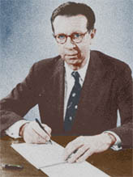
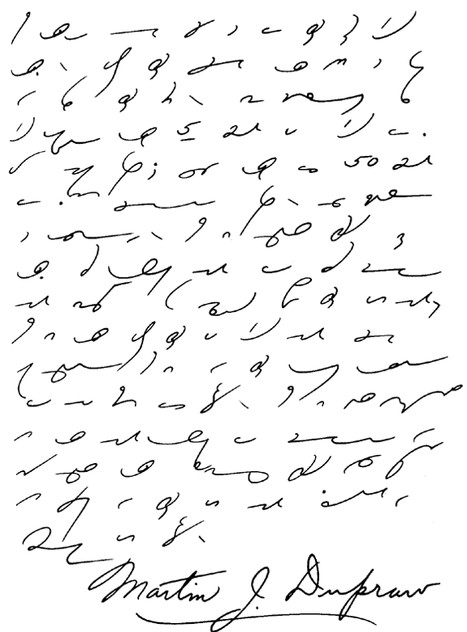

|
|
|
A Web Site dedicated to the
perpetuation of Gregg’s Light-Line Phonography |
- Anniversary Manual - |
|

When Martin J. Dupraw won the world's shorthand championship,
he established some remarkable records for accuracy. On a speech
dictated at 200 words a minute for five minutes, he made only one
error. On court testimony dictated at 280 words a minute for
five minutes, he made only two errors. These and many other
records that he has established are due, in large measure, to the
amazing legibility of his shorthand notes.
When
you examine Mr. Dupraw's shorthand notes on the below image, which
he wrote from dictation especially for a textbook using Simplified
shorthand, one thing will immediately impress you—the careful
attention to proportion.
Notice for example
how large he makes his a circles and how small he makes his
e circles. There is never any question whether a circle
represents a or e. Notice, too, how much larger
his l's are to his r's. As you read Mr. Dupraw's
notes, you will observe many other examples of good proportion.
Another thing that will strike you as you examine
Mr. Dupraw's notes is the way he rounds off angles. He does
not consciously do this; rounding angles comes naturally to him as
a result of his high speed. As your speed increases, you, too,
will find that you will naturally round off angles.
In the piece that Mr. Dupraw has written in his beautiful shorthand,
he discusses the size of notes. You will notice that he has
a fairly large shorthand style, just as he has a large longhand style.
Don't try to imitate his style of writing; take
the advice he gives in his article "How Big Should My Shorthand
Be?"
 |
|
|
Design
Copyright ©
Andrew Owen. All Rights Reserved. |